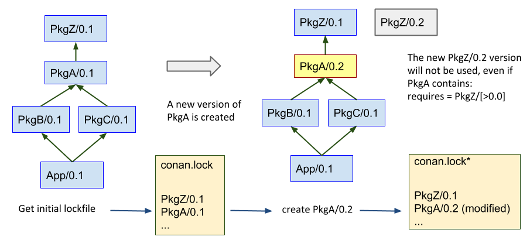
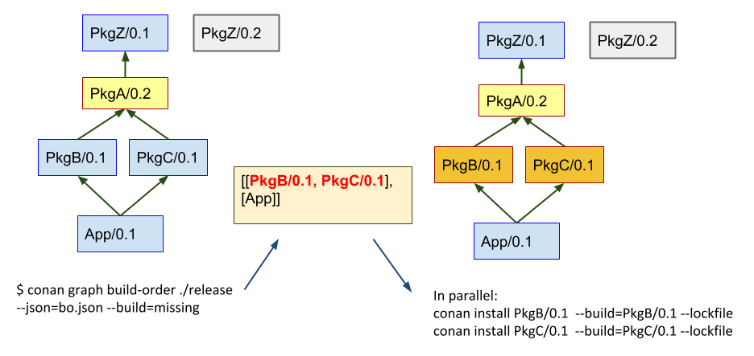

Lockfiles
Warning
This is an experimental feature subject to breaking changes in future releases.
Lockfiles are files that store the information of a dependency graph, including the exact versions, revisions, options, and configuration of that dependency graph. As they depend on the configuration, and the dependency graph can change with every different configuration, there will be one lockfile for every configuration.
Lockfiles are useful for achieving deterministic builds, even if the dependency definitions in conanfile recipes are not fully deterministic, for example when using version ranges or using package revisions.
Let’s say we have 3 package recipes pkgc, pkgb, and pkga, that define this dependency graph:
The first time, when a conan install . is executed, the requirement defined
in pkgb is resolved to pkga/1.0, because that was the latest at that time that
satisfied the version range pkga/[*]. After such install, the user can build and
run an application in the source code of pkgc. But some time later, another colleague
tries to do exactly the same, and suddenly it is pulling a newer version of pkga that
was recently published, getting different results (maybe even not working). Builds with
version ranges are not reproducible by default.
Using lockfiles
Lockfiles solve this problem creating a file that stores this information. In the example above, the first conan install . will generate a conan.lock file that can be used later:
$ cd PkgC
$ conan install . # generates conan.lock
# After PkgA/1.1 has been created
$ conan install . --lockfile # uses the existing conan.lock
The second time that conan install . --lockfile is called, with the lockfile argument
it will load the previously generated conan.lock file, that contains the information that
pkga/1.0 is used, and will apply it again to the dependency resolution, resolving exactly
the same dependency graph:
The conan.lock file contains more information than the versions of the dependencies, it contains:
The “effective” profile that has been used to compute this lockfile. The effective profile is the combination of the profile files that could have been passed in the command line, plus any other settings or options directly defined in the command line.
It encodes a graph, not just a list of versions, as different nodes in the graph might be using different versions too.
The options values at each package. As downstream consumers can define options values, it is important that this information is also stored, so it is also possible to build intermediate nodes of the graph leading to the same result.
Another kind of requirements like python_requires.
Again, it is important to remember that every different configuration will generate a different graph, and then a different conan.lock as result. So the example above would be more like the following if we wanted to work with different configurations (e.g. Debug/Release):
$ cd PkgC
$ cd release
$ conan install .. # generates conan.lock (release) in this folder
$ cd ../debug
$ conan install .. -s build_type=Debug # generates conan.lock (debug)
# After PkgA/1.1 has been created
$ conan install .. --lockfile # uses the existing conan.lock (debug)
$ cd ../release
$ conan install .. --lockfile # uses the existing conan.lock (release)
Commands
There are 2 main entry points for lockfile information in conan commands:
--lockfile argument in install/create/export/info
If the command builds a package, it can modify its reference. Even if the version is not changed, if something in the recipe changes, it will get a new recipe revision RREV and if the package is built from sources again, it might end with a new, different package revision PREV. Those changes will be updated in the conan.lock lockfile, and the package will be marked as “modified”.
conan graph command
This command group contains several functions related to the management of lockfiles:
conan graph lock
This command will generate a conan.lock file. It behaves like conan install command, (this will also generate a lockfile by default), but without needing to actually install the binaries, so it will be faster. In that regard, it is equal to conan info that can also generate a lockfile, but the problem with conan info -if=. is that it does not allow to specify a profile or settings.
conan graph clean-modified
When a conan create command that uses a lockfile builds a new binary, its reference will change. This change, typically in the form of a recipe revision and/or package revision is updated in the lockfile and the node is marked as “modified”. This clean-modified removes these “modified” flags from a lockfile. This operation is typically needed before starting the build of a package in a locked graph, to know exactly which nodes have been modified by this operation.
conan graph update-lock
Update the current lockfile with the information of the second lockfile. Only the nodes marked as “modified” will be updated. Trying to update to the current lockfile one node that has already been “modified” will result in an error.
conan graph build-order
Takes a lockfile as an argument, and return a list of lists indicating the order in which packages in the graph have to be built. It only returns those packages that really need to be built, following the --build arguments and the
package_id()rules.
For more information see Commands
How to use lockfiles in CI
Note
The code used in this section, including a build.py script to reproduce it, is in the examples repository: https://github.com/conan-io/examples
$ git clone https://github.com/conan-io/examples.git
$ cd features/lockfiles/ci
$ python build.py
One of the applications of lockfiles is to be able to propagate changes in one package belonging to a dependency graph downstream its affected consumers.
Lets say that we have the following project in which packages pkga, pkgb, pkgc, pkgz and app
have already been created and only one version of each, the version 0.1 exists. All packages
are using version ranges with a range like pkgz/[>0.0], so basically they will resolve to
any new version of their dependencies that it is published.
Also, the full_version_mode will be defined for dependencies. This means that if the version
number of one package dependencies change, then it will require a new binary. This assumption
is reasonable, as PkgA, PkgZ are header only libraries and PkgB and PkgC are static libraries
that inline functionality defined in PkgA and PkgZ. No matter what the changes in PkgA and PkgZ
are in new versions, it will be necessary to build new binaries for the downstream consumers.
$ conan config set general.default_package_id_mode=full_version_mode
Now, some developer does some changes to PkgA, and do a pull request to the develop branch, and we want our CI to build the new binaries for the dependants packages, down to the final application App, to make sure that every works as expected.
The process starts generating a conan.lock lockfile in the release subfolder:
$ conan graph lock app/0.1@user/testing --lockfile=release
This lockfile will contain the resolved dependencies in the graph, as we only have one version 0.1 for all the packages, all of them will be locked to that 0.1 version.
Once the lockfile has been generated, it doesn’t matter if new, unrelated versions of other
packages, like pkgz/0.2 is created with cd pkgz && conan create . pkgz/0.2@user/testing
Now we can safely create the new version of pkga/0.2, that will resolve to use pkgz/0.1 instead of the latest 0.2, if we use the lockfile:
cd pkga && conan create . pkga/0.2@user/testing --lockfile=../release
# lockfile in release/conan.lock is modified to contain pkga/0.2
Note that the lockfile is modified, to contain the new pkga/0.2 version.
The next step is to know which dependents need to be built because they are affected by the new pkga/0.2 version:
$ conan graph build-order ./release --json=bo.json --build=missing
[[PkgC, PkgD], [App]] # simplified format
This command will return a list of lists, in order, of those packages to be built. It will be
stored in a bo.json json file too. Note that the --build=missing follows the same rules
as create and install commands. The result of evaluating the graph with
the pkga/0.2 version, due to the full_version_mode policy is that new binaries for
PkgB, PkgC and App are necessary, and they do not exist yet. If we don’t provide the --build=missing
it will return an empty list (but it will fail later, because binary packages are not available).
We can now proceed iteratively with the following procedure:
pop the first element of the first sublist of the build order result, get its
refreference# python _, ref = build_order[0][0] ref = ref.split("#", 1)[0]
allocate some resource, like a CI build server, or create a temporary folder.
$ mkdir build_server_folder && mkdir build_server_folder/release
copy the lockfile to that resource (and move to it)
$ cp release/conan.lock build_server_folder/release $ cd build_server_folder
build the package
$ conan install <ref> --build=<ref> --lockfile=release
go back to the parent, update the lockfile with the changes
$ cd .. $ conan graph update-lock release build_server_folder/release $ rm -rf build_server_folder
compute again the build-order of packages, if not empty, goto 1
$ conan graph build-order ./release --json=bo.json --build=missing
clean “modified” nodes from the lockfile
$ conan graph clean-modified release/
Note that this is a suboptimal approach, in order to explain the functionality, which is more easy to follow if it is sequential. In reality, the CI can take the first sublist output of conan graph build-order and fire all its packages in parallel, because they are guaranteed to be independent. Then, as soon as they start finishing and build servers become available, the conan graph build-order can be reevaluated, and new builds can be launched accordingly, just taking care of not re-launching the same build again. Note that the result of build-order contains a unique UUID, which is the identifier of the node in the graph, which could be useful to dissambiguate.
With this later approach, a deterministic build with optimal Continuous Integration process with optimal utilization of resources and minimizing unnecessary rebuilds is achieved.
Note that this example has been using incremental versions and version ranges. With package revisions it is also possible to achieve the same flow without bumping the versions and using fixed version dependencies:
It will not be necessary to change the recipes or even to inject the values in CI. Every change in a recipe will produce a new different recipe revision.
Revisions are also locked in lockfiles.
As revisions are resolved by default to latest, and the conan cache can only hold one revision, it might be necessary to pass
--updateargument so the correct revision is updated in the cache.It is necessary to define the
recipe_revision_modeor thepackage_revision_modeif we want to guarantee that the binaries correctly model the dependencies changes.
For implementing this flow, it might be necessary to share the different conan.lock lockfiles among different machines, to pass them to build servers. A git repo could be used, but also an Artifactory generic repository could be very convenient for this purpose.
Note
There is a very experimental, temporary configuration (general.relax_lockfile), that allows to expand dependency
graphs with packages that are not in the lockfile. This scenario happens for example when a test_package/conanfile.py contains
other requirements. If the lockfile was built from another downstream consumer, the test_package and its requirements will
not be contained in the lockfile. But we might still want to do a conan create for that node of the graph.
Putting the general.relax_lockfile=1 will allow this case. This is a temporary thing introduced at 1.23, will be removed in future versions
(while probably leaving the behavior in some of its forms)